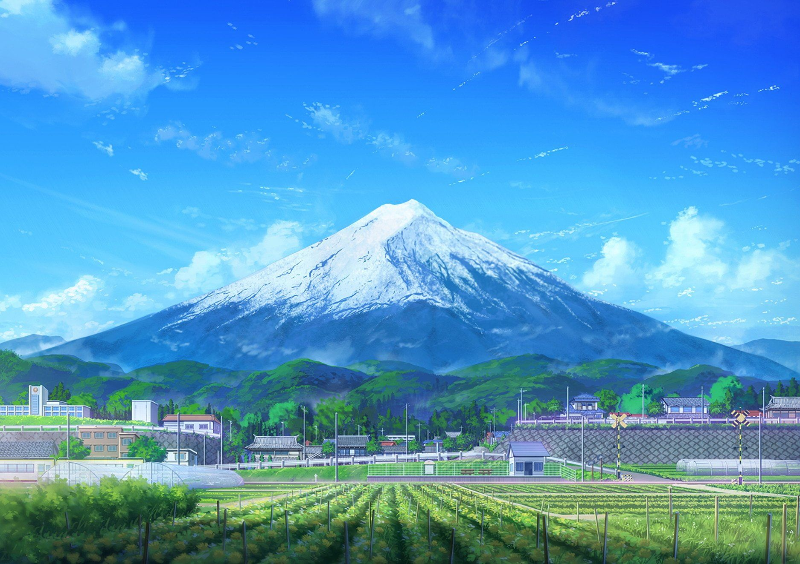

Mount Fuji
Rising to 12,388 feet (3,776 metres), Mount Fuji is the tallest mountain in Japan and is known for its graceful conical form. It is the country's sacred symbol, and temples and shrines are located around and on the volcano.

Eiffel Tower
The Eiffel Tower is a wrought-iron lattice tower on the Champ de Mars in Paris, France. It is named after the engineer Gustave Eiffel, whose company designed and built the tower. Locally nicknamed "La dame de fer", it was constructed from 1887 to 1889 as the centerpiece of the 1889 World's Fair.